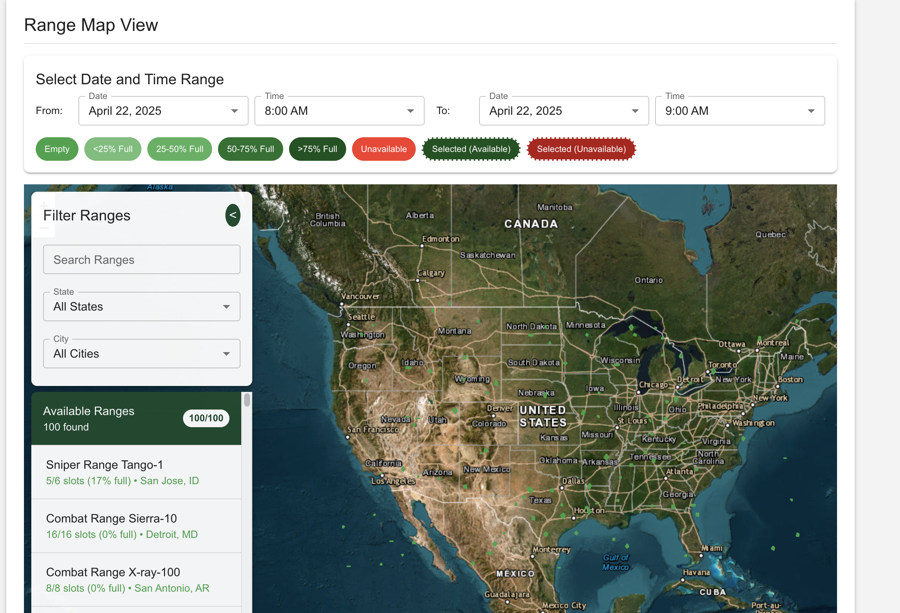

Project Gallery
System interfaces and functionality

Interactive Map View with Range Availability

Admin Approval Dashboard
An innovative map-based scheduling system that streamlines the process of booking and managing training ranges for the IDF.
Visual range booking and management
Range-Cal was developed to solve the challenge of efficiently scheduling and coordinating the use of military training ranges across multiple bases. The system offers a visual, map-based interface that allows unit commanders to easily identify available ranges, book them according to their training requirements, and receive appropriate approvals through an automated workflow.
Note: Some technical details have been abstracted due to security considerations.
Capabilities and functionality
Visual representation of all training ranges with color-coded availability status and detailed information on hover.
AI-assisted booking system that suggests optimal range allocation based on unit requirements and historical usage patterns.
Automated multi-stage approval process with notifications and status tracking for all stakeholders.
Comprehensive filtering options for finding ranges by type, capacity, available equipment, and time slots.
Live updates on range status, maintenance schedules, and weather conditions affecting availability.
Responsive design that works seamlessly across desktop, tablet, and mobile devices for field operations.
System interfaces and functionality
Technologies and architecture
Overcoming technical hurdles